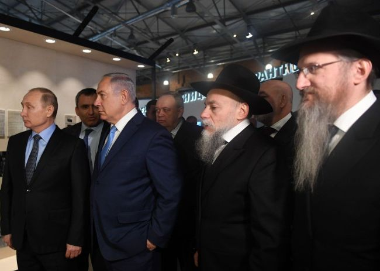

Putin and Plowshares Part 2
By Prof. Shimon Silman, RYAL Institute and Touro College

All this hindered its Swords into Plowshares (SIP) transformation. While the government as a whole was committed to it, there were officials and bureaucrats who longed for the more controlled Soviet system and resisted change, what we would now call in America the “deep state.”
A case in point: In January 1990, General Mikhail Moiseyev, then chief of the Russian general staff, announced at a Military Doctrine Seminar in Vienna a set of guidelines for a new Russian military doctrine:
War will no longer be considered a means of achieving political objectives.
Russia will never initiate military actions against any other state.
Russia will never be the first to use nuclear weapons.
Russia has no territorial claims against any other state, nor does it consider any other state to be its enemy.
Russia seeks to preserve military parity as a decisive factor in averting war, but at much lower levels than at present.
Also, war prevention—instead of war preparation—emerged as the predominant political objective of the new doctrine.
It was a beautiful example of what the Rebbe MH”M described in the Swords into Plowshares Sicha as ביטול מצב של מלחמה. But for Russia, this doctrine was not so easy to implement.
Contrast this to the other communist world power: China. The Chinese communist government never fell apart and persists to this very day, even while free market practices are in place and Swords into Plowshares policies have been implemented. The transition was not chaotic but slow and deliberate, Chinese style.
Russia asked the United States for help in making its own transition and the U.S. has assisted by generously funding major programs and setting up the International Science and Technology Center (ISTC) in Moscow to employ former Soviet weapons scientists, as we described in earlier articles. (See pages 199-213 in my book Scientific Thought in Messianic Times.)
Eventually, Yeltsin, who had become dysfunctional, had to resign to avoid prosecution on corruption charges. It was agreed that Vladimir Putin would take over.
PUTIN AND THE JEWS
We left off in Part 1 of this article mentioning that Putin is not an anti-Semite. Far from it, he is a good friend of the Jews and of Israel. We have written previously of the war in Syria where Russia is allied with Iran against the revolutionary forces, but at the same time gives Israel a free hand to destroy Iran’s arms shipments to Hezbollah in Lebanon that go through Syria and to bomb Iran’s military bases in Syria. The Russian military coordinates with the Israeli Air Force on this to make sure that Russian and Israeli planes don’t run into each other. Netanyahu has met with Putin many times about this. Here’s what Netanyahu said before leaving for one such meeting in January 2018:
“I am now leaving for Moscow to meet with Russian President Vladimir Putin. We meet periodically in order to ensure the military coordination between the IDF and the Russian forces in Syria. As of today, this has succeeded, and it is important that it continue to succeed.
“I will discuss with President Putin Iran’s relentless efforts to establish a military presence in Syria, which we oppose and are also taking action against. We will also discuss Iran’s effort to turn Lebanon into one giant missile site, a site for precision missiles against the State of Israel, which we will not tolerate.”
As we write this article, Netanyahu has once again traveled to Moscow to discuss the matter with Putin.
Let’s take a look at Putin relationship with the Jews in Russia itself. In March 2018, after Putin’s reelection, Rabbi Shea Deitsch, a Chabad shliach who works with the Russian Chief
Rabbi Berel Lazar, also a Chabad shliach, told Arutz 7 (Israel National News) that Putin is responsible for the fact that anti-Semitism is almost nonexistent in Russia. He said:
“I told my children that in these elections, we fulfill the mitzvah of showing gratitude. That was my feeling, my wife’s feeling, and my children’s feeling. Putin did great…things for Judaism and Chabad. Here in Moscow, there are things which were absent for hundreds of years. Jews wear a talit and kippa openly. This Shabbat I had Israeli guests wearing shtraimels in the street. Jews in Russia receive a lot of respect, and it starts from the top, from Putin, and ends with the media, government offices and banks.
“Every year before Pesach we receive a holiday letter from President Putin. Last Hanukkah, we held a candle-lighting ceremony in the Red Square. Jews here are very happy with Putin.”
Here is one more example. Last January, while Netanyahu was in Moscow meeting with Putin about Iran and Syria, there was an event commemorating International Holocaust Memorial Day. As reported on Collive.com:
President of Russia, Mr. Vladimir Putin spent more than four hours at the Jewish Tolerance Museum in the Marina Roscha neighborhood of Moscow, commemorating International Holocaust Remembrance Day. Although the original date was last Shabbos, he postponed it in order not to cause desecration of Shabbos.
While at the museum together with its founder, Chief Rabbi of Russia Rabbi Berel Lazar, the president of Russia was shown the site where a special monument will be built in memory of the Ghetto rebels (may G-d avenge their blood). Its cornerstone was brought from the village of Lubavitch, from the valley of death where more than one thousand Jews were murdered by the Nazis during the second World War…
Later he participated in the official ceremony marking Holocaust Remembrance Day, with the participation of Prime Minister Benjamin Netanyahu, dozens of ambassadors from all over the world, war veterans, and Holocaust survivors…Prior to the ceremony, the two had a private meeting in one of the museum’s rooms which was allotted to them for this.
Putin is the president of Russia. If nothing else, he is a very busy man. Government officials everywhere who participate in commemorative events typically just make an appearance and say a few words of greeting, mentioning the significance of the event. Their participation may last only several minutes. Can you imagine a president of a major world power spending four hours at such an event? Not unless it really meant something to him. Putin must be a real friend of the Jews.
Mina Yuditskaya Berliner was a Jewish high school teacher of Putin whom he liked very much. In 1973 she emigrated to Israel but kept following Putin’s career in the news. When Putin visited Israel in 2005, she received permission from the Russian embassy to attend a reception in his honor. There she met Putin once again and Putin invited her to have tea with him in private. At this meeting Putin asked her if she needed anything. She told him she needed an apartment in a better location. Shortly after that, an employee of the Russian government showed up at her doorstep and took her to see some apartments in the center of Tel Aviv. One of them was bought for her. When she died in 2017, she left the apartment to Putin—who now owns an apartment in downtown Tel Aviv.
CANCELLING THE INF TREATY
On the other hand, there are some Russian activities that must be critically examined. In 2008 Russia fought a war with Georgia, a neighboring country of the former Soviet Union. This has been the only war fought by one of the five permanent nations on the UN Security Council (see Part 1 of this article) since the Swords into Plowshares (SIP) declaration. But, as Professor Cohen points out, Georgia actually started the war. We should make a note of the fact that the war fit the pattern of decline in warfare described by the Human Security reports: 1) Short duration. It lasted only 5 days and 2) Fewer casualties. About 800 people died in the war, which is a relatively low number for a war with a major world power.
On February 1, President Trump withdrew from the Intermediate-Range Nuclear Forces (INF) Treaty with Russia because Russia had violated the treaty by making more of these nuclear missiles than were allowed. (The purpose of the treaty was to protect Europe, which could potentially be the target of such intermediate and short-range missiles.) The Hebrew date was 26 Shevat, the exact date of the SIP declaration 27 years ago, and it was the Friday before Parshas Mishpatim just like the SIP declaration 27 years ago, points emphasized by the Rebbe MH”M in the SIP Sicha.
I have been asked several times in the past few weeks: “How is it that exactly 27 years to the day after the SIP declaration that they are cancelling it?” But the question is not a valid question because that’s not what happened. The INF Treaty has nothing to do with the SIP declaration. The SIP declaration of 1992 was a general commitment to “end the state of warfare between the nations of the world,” reduce armaments and start working together peacefully for the good of all mankind. The INF Treaty of 1987, signed by U.S. President Reagan and Russian President Gorbachev, was a specific agreement regarding a certain type of weapon. Withdrawing from the treaty does not mean cancelling the SIP commitment—but it may be a step backward. Is it? That’s the question.
It is not necessarily a step backwards. Firstly, by the terms of the treaty, there is a window of 180 days during which they can fix things up. As they say, “It’s not over till it’s over.” Secondly, Trump, who is a master at making deals, has been known to cancel a faulty agreement and replace it right afterward with a better agreement. This was the case with the North America Free Trade Agreement (NAFTA). In our case, regarding the INF Treaty, Trump has already said in his State of the Union speech, “Perhaps we can negotiate a different agreement, adding China and others…”
Speaking of China, that old aggressive, belligerent and militant enemy of ours, and sometimes of Russia too, they had something to say about the situation. China said that the U.S. and Russia should stop going at each other and just sit down and work out their differences. Huh? Is this the same China? Or is this “ending the state of warfare between the nations of the world” i.e. SIP?
COLD WAR OR HOT PEACE?
Regarding the annexation of Crimea, first of all it was not a war. Secondly, the people of Crimea voted to go with Russia. This is not surprising, since 1) the people of Crimea (and eastern Ukraine in general) have strong ties with Russia, 2) Russia is a much more stable country, and 3) Jews in particular feel much better about Russia where anti-Semitism is very low as opposed to Ukraine where the nationalist party is openly anti-Semitic.
We will not get into a discussion of alleged election interference since that is not a Swords into Plowshares issue. Suffice it to say that all countries do this. The most blatant example in recent times was Obama sending operatives into Israel during its last election to actively work against Netanyahu.
But not everything distasteful that Russia does can be blamed on Putin. As Professor Cohen points out, there is a “deep state” in Russia just like in the US. These are bureaucrats left over from the Soviet era who have their own agendas over whom Putin does not have complete control.
But we do not agree with Professor Cohen that we are involved in a new cold war with Russia. Rather, as Michael McFaul, the former U.S. ambassador to Russia, points out, it’s more of a “hot peace”—the key word being “peace” (see his book From Cold War to Hot Peace).
My own view is that now nations can’t seem to get a war going even when they’d like to, partly for economic reasons; there’s too much at risk. Nations are so interconnected economically that it would be a shame to lose it all just to start a war (see my article “Preparing for War or Playing Chess,” Parshas Mishpatim, 5777). But mainly, I think, it’s because it’s too late to solve problems with warfare. That era is over. “War will no longer be considered a means of achieving political objectives.”
…It’s the Era of Moshiach.
לזכות א”מ רחל בת שרה לאה תי’ לרפואה שלימה ולבריאות טובה ונכונה לחיים נצחיים ללא הפסק בינתיים
Beis Moshiach (staff). "Putin and Plowshares Part 2." Beis Moshiach, no. 1155 (February 21, 2019).